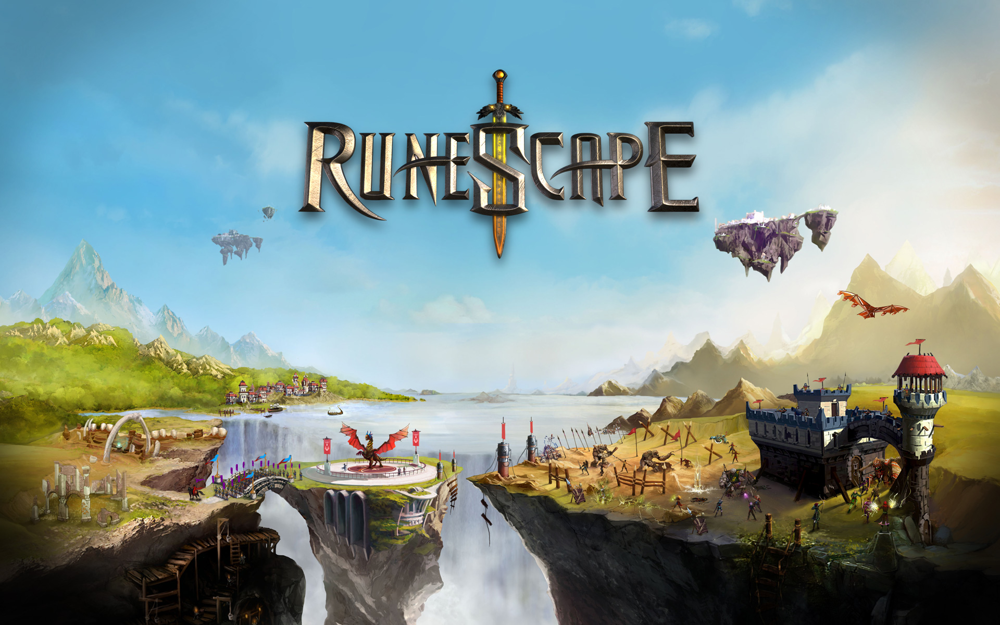
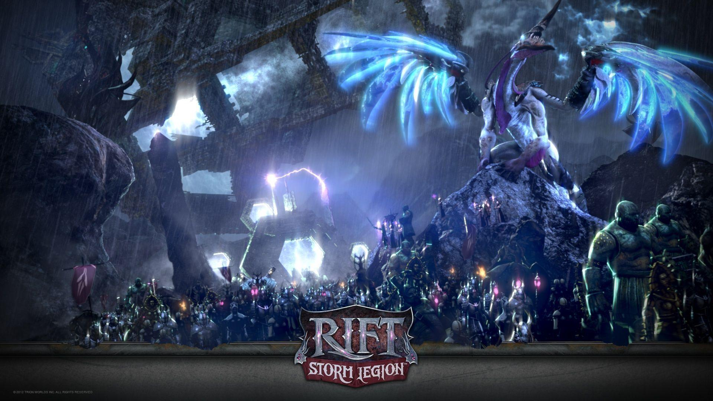
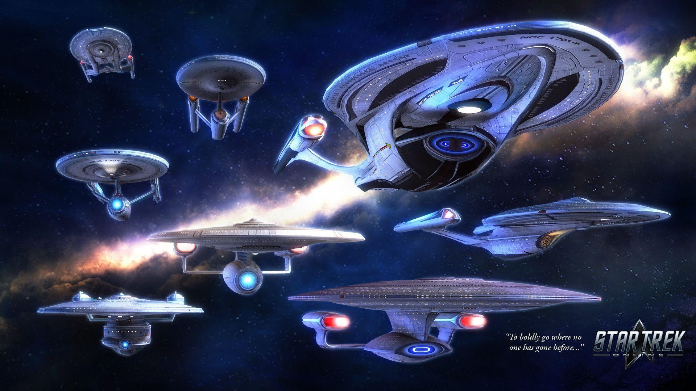
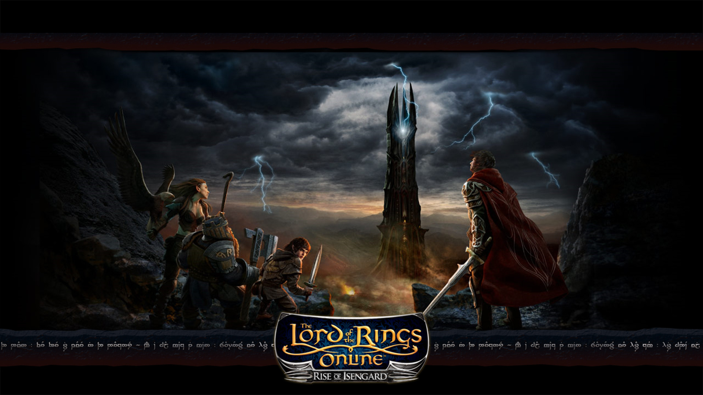

Games
Here you will find some recommendations regarding the top MMO games right now!
Our site currently only supports MMO games. More games will be added in the upcoming future. Open Worlds Community hopes to one day have something for every type of gamer out there.
Aside from completely free to play games, we have also included some MMOs with lengthy free trials – games where there is plenty to enjoy without spending a penny. So without further
ado, let’s take a look at the best online games you can play without breaking the bank.
Top 5: Free to Play
#5: Runescape

At over 15 years of age, Runescape isn’t far off being able to buy itself a pint at the pub – you don’t get to that age in that industry without being one of the best PC games. By gaming standards it should be abandoned and decrepit, but with a still thriving community, one of the best free-to-play models around and updates so regular it’s nearly impossible to keep track of, Runescape still feels as young and fresh as it did in the early 2000s. Quests, new characters, festive events and entirely new features have come and gone in their hundreds.
Runescape is also one of the friendliest MMOs around, with a community of veterans who are always willing to lend a hand to a noob in need – alternatively, you can use our Runescape beginner’s guide. Even after some graphical upgrades, it’s not the easiest MMO on the eyes, but that does at least mean you can run it on a potato.
Check out the game here.
#4: Rift

Rifts, as you might expect, are what makes Rift one of the most lively and exciting free MMOs on PC. These titular portals open up unpredictably across the world, spawning in hordes of enemies or gigantic bosses and forcing every player in the area to band together in order to repel the demonic attacks.
Of course Rift is not just a multiplayer adaptation of whack-a-mole. It boasts one of the most flexible class systems in the genre, allowing players to create a variety of builds. From the very specific to the Jack-of-all-trades: every style of play is catered for. Like all of the best MMOs, Rift also gets plenty of updates so players always have something new to look forward to, like the Crucia’s Claw update.
Check out the game here.
#3: Star Trek Online

Character creation tools in MMOs let you shape everything from your avatar’s jawline and eyelash length to the exact density of their chest hair, but even they have got nothing on the options available in Star Trek Online. Tired of playing as a human? Great, here you can be a Gorn, Rigellian, Romulan, Klingon, or any other of the 30 race variations available.
Questing and progressing in Star Trek Online plays out like episodes from the TV series: one moment you are wandering through space, the next you are having to do deals with, or shoot lasers at, one of the many franchise belligerents. Be it in spaceship battles or on the ground where gameplay takes the form of a third-person shooter, Star Trek Online does a brilliant job of bringing the storylines and tone of the TV shows into an F2P MMO. It even gets updated regularly like a TV show, with expansions like Victory is Life adding the crew from Deep Space Nine to the game.
Check out the game here.
#2: Guild Wars 2

With a storyline that reacts to the player’s actions, Guild Wars 2’s narrative is unique by MMORPG standards. Instead of traditional quests, players encounter dynamic events that pop up around the game world. Likewise, there are multiple paths to completion for each of these encounters, and intentional or not, your actions in Guild Wars 2 will have consequences.
For example, defending a town from a group of rampaging ogres might cause them to return with deadlier weapons or seek out refuge in a nearby cave – you will have to deal with the fallout of these events, whether that means repelling a stronger attack or hunting down and killing the remaining ogres. The result is a free MMO with the questing diversity of one of the best RPGs of all time: what’s not to love?
Check out the game here.
#1: Lord of The Rings Online

Wouldn’t it be nice to enter an MMO without having to plunge multiple hours wrapping your head around its lore? Chances are you will already know the basics of Tolkien’s Middle-earth before heading into Lord of the Rings Online – so that is half the battle. If the recent Middle-earth: Shadow of War didn’t scratch that Tolkien itch than perhaps this free MMO will.
The other half is avoiding all the quests, NPCs and PvP encounters so you can get on with what you’re really there to do: explore all the most famous locations from the franchise – locations like Rohan, Moria, and the Shire. In fact, pretty much every setting in the lore has made it into the game in some form. You can even waltz right through the gates of Mordor contrary to the popular meme, although in typical MMO fashion you will have to do a whole lot of farming in order to meet the level requirements of some areas.
Check out the game here.